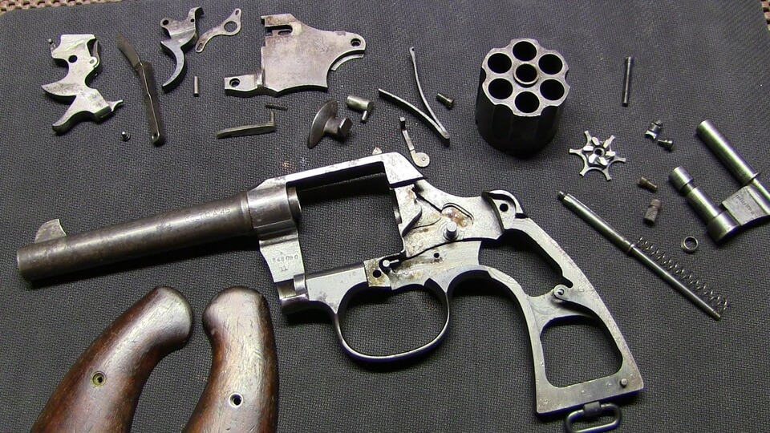
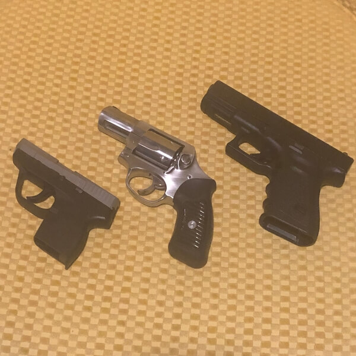
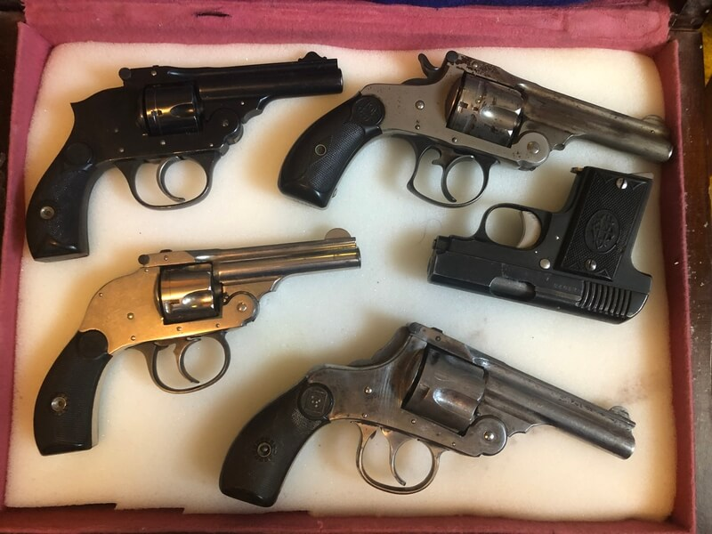
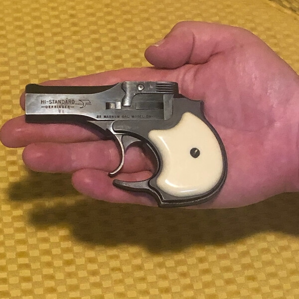
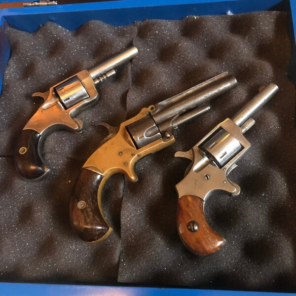

Hours: 9 a.m. until 7 p.m. Monday-Saturday
Location: 1776 and 2nd Amendment Way
Sierra Vista, Arizona 85635
Telephone: 555-55-5555



We are a Federal Firearms Licensed business.
Philip Schmootz is our local gunsmith extraordinare. He can repair just about anything. He is master craftsman when it comes to fabricating parts. He is famous for his ability to make precision wares such as hammers, springs, pins, and screws. Schmootzie’s especially skilled in recreating accurate fires arms from the 1800’s.
 Pro-Shop Hours
- Monday - Friday 11:00 a.m. - 7:00 p.m.
- Saturday 9:00 a.m. - 5:00 p.m.
- Sunday - CLOSED